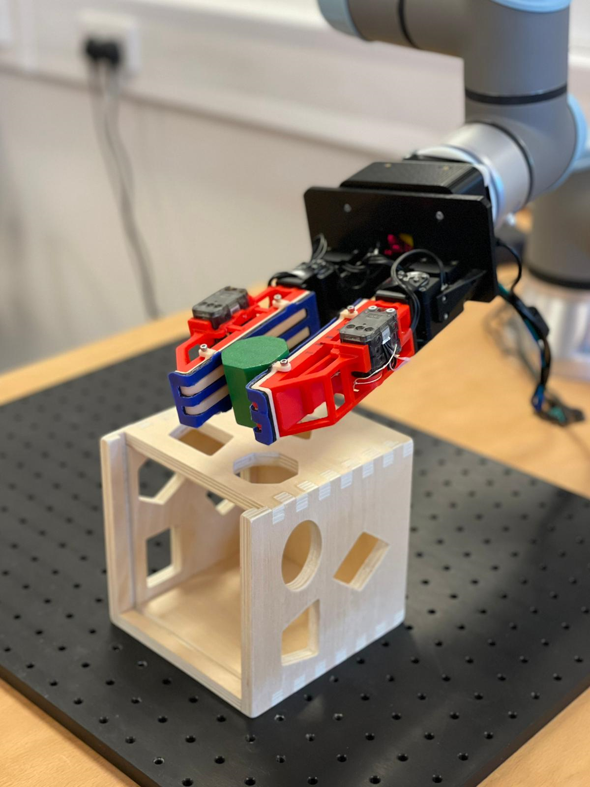
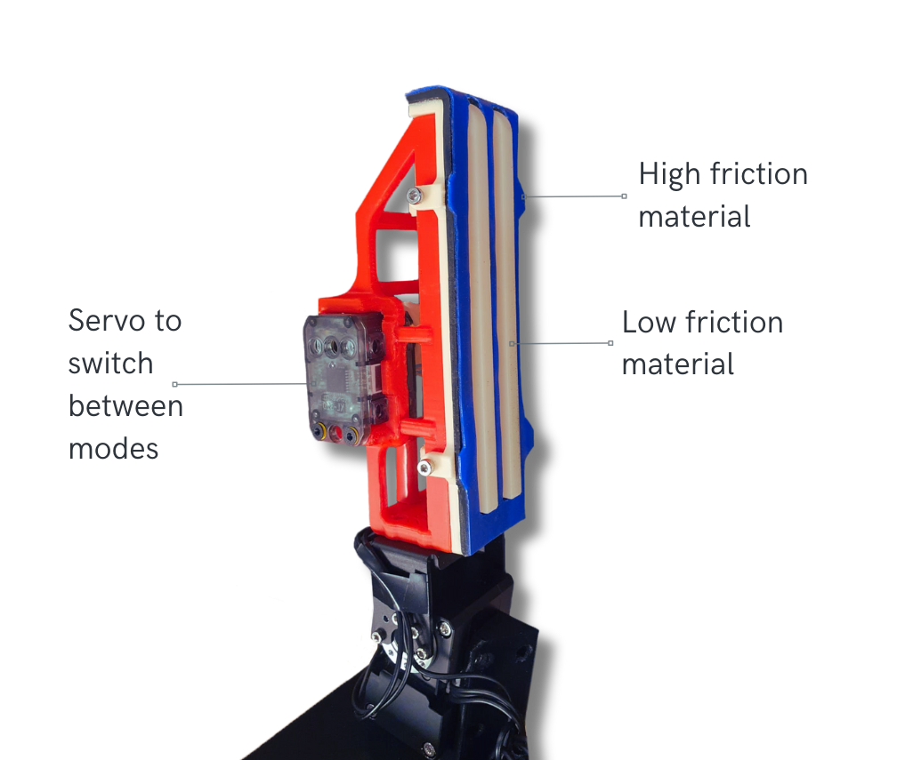

In Hand Manipulation using a Variable Friction Gripper
The objective of this project was to use a robot arm and a novel variable friction gripper, to perform a toy assembly task with In Hand Manipulation. This project serves as a proof of concept for a potential production line application. This was the end of 3rd Year Consultancy group project.

Motivation
Many robots used in manufacturing rely mainly on elbow movement to manipulate objects which requires a larger work area. The variable friction gripper enables in-hand manipulation, allowing for the repositioning of objects relative to the gripper. Through changing the surface in contact with the object, rotation and translation of the object is made possible. By manipulating objects with the gripper, elbow movement of the robot arm is reduced, saving space, time and energy as this is more efficient.
Gripper Design
Each finger has two friction levels: high and low.
When the high friction surface is raised on both fingers, the corners of the object in contact with the surface remain in place, and the object is fixed diagonally as the fingers rotate.
When the low friction surface is raised on one finger, the part of the object in contact with that finger is able to slide along it, enabling passive distal and proximal translation.

Project Video
Video showcasing the capabilities of the variable friction gripper.